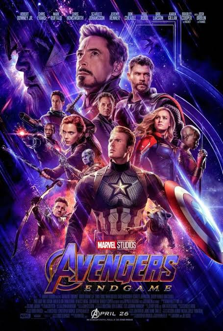
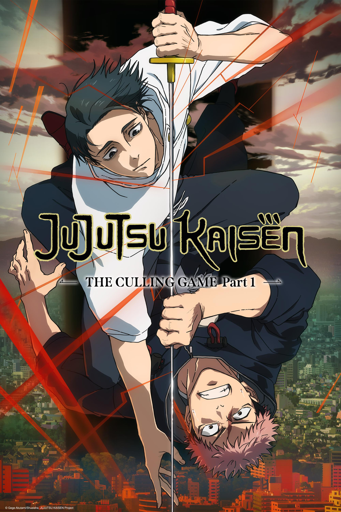
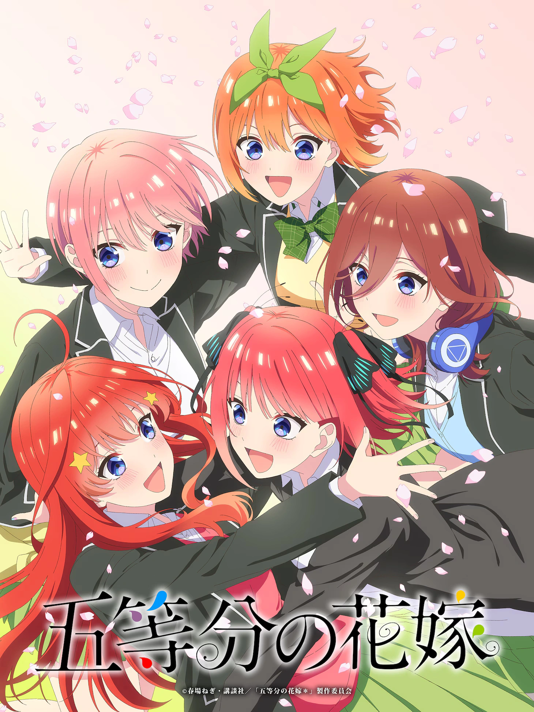
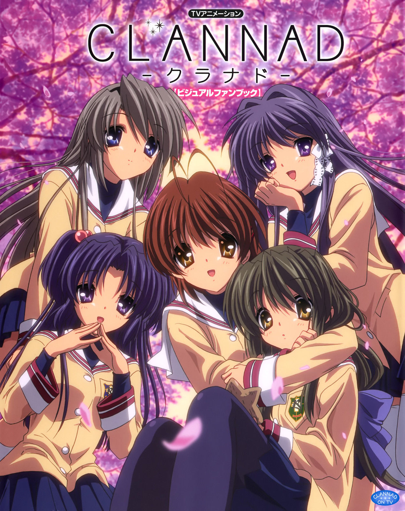
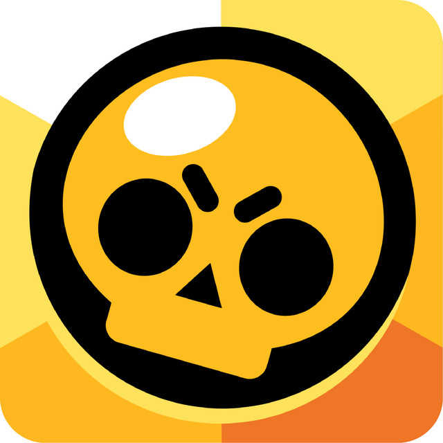
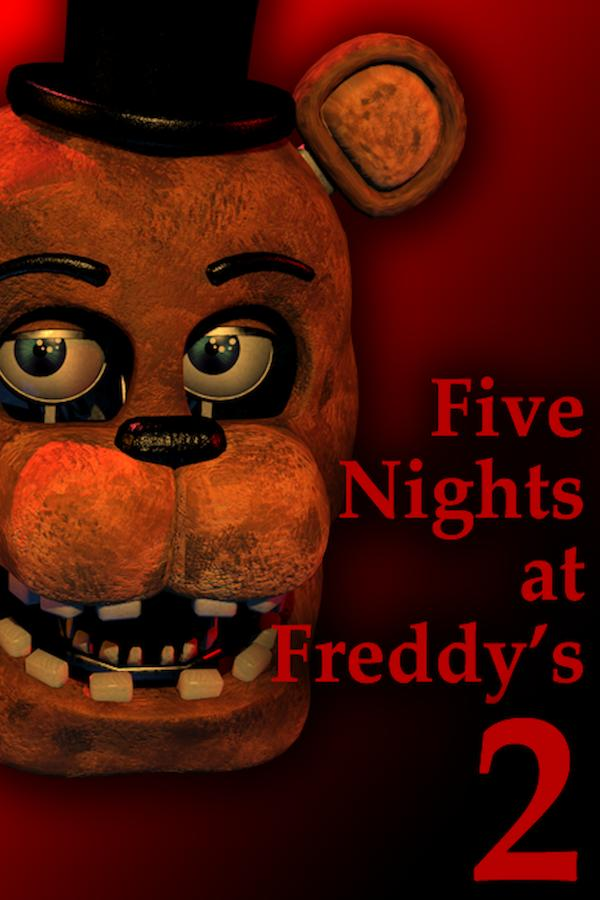

“Mi energía cambia. Mi curiosidad no.”
Soy alegre, divertido, cariñoso y bastante curioso. Tengo momentos reflexivos, pero intento mantener siempre una buena actitud y seguir avanzando.
PERSONAL PROFILE — 001
Gamer, músico y futuro creador de mundos digitales. Aquí no hay stats vacíos: solo una persona aprendiendo a subir de nivel todos los días.
Explorar perfil ↘Datos personales
“Mi energía cambia. Mi curiosidad no.”
Soy alegre, divertido, cariñoso y bastante curioso. Tengo momentos reflexivos, pero intento mantener siempre una buena actitud y seguir avanzando.
Audio
Pantalla
Lobby
Cancha
Combustible
Hover para descubrir
Construir mundos sin límites.
CREATIVIDAD +10Partidas rápidas, combos y adrenalina.
RANKED / ONLINEHistorias emotivas que quedan grabadas.
MOOD / LENTOCanciones para cada versión de mí.
NOW PLAYINGIdeas en desarrollo
WEB / PERSONAL
INCOMING PROJECT
INCOMING PROJECT
Player profile
Una meta importante para mí: bajar de peso de forma saludable y construir una buena condición física. Progreso real, sin prisa y sin perfección.
Momentos que quedaron guardados
Un amigo y yo nos fuimos al bosque solos. Intentamos trepar un árbol para ver todo desde arriba, pero terminamos cayendo bastante feo. Cuando nuestras mamás se enteraron… recibimos un buen regaño.
Una amiga y yo fuimos al Jockey Plaza a pasear y comer tranquilos. Pero, de repente, unos señores comenzaron a pelear y arruinaron el momento — además, nos quedó arruinada la comida. Fue horrible, pero todavía da para contarla riendo.
Mi brújula personal
CREAR
EXPRESARME
SEGUIR
Memoria de progreso
Construir ideas y convertirlas en experiencias reales.
Música para expresar lo que las palabras no alcanzan.
Constancia, precisión y capacidad de volver al juego.
6.º grado · Recuerdo marcado en memoria
Una celebración que ayudó a definir la aventura.
OBJECTIVE

Avengers: Endgame

Spider-Man: No Way Home

Jujutsu Kaisen

Las quintillizas

Clannad

Minecraft
Roblox

Gacha

Brawl Stars

Five Nights at Freddy's